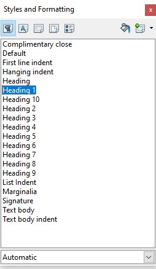

Examples
Converting a table of contents created with Microsoft Word to bookmarks in a PDF
This example is shown with Microsoft Word and Adobe Acrobat Pro. There are other software tools that perform similar functions.
- Create a table of contents at the beginning of the Word document.
- Use Save as... → PDF to convert the Word document to PDF.
The table-of-contents entries in the converted document will be linked to the headings in the document. In addition, the headings will appear as PDF Bookmarks in the Acrobat navigation pane.
If the document provides a glossary and/or index, these sections should have headings that appear in the table of contents (and thus as bookmarks in the Navigation pane). The table of contents also should be marked up with a heading so it is bookmarked as well.
If this markup has not been done in the authoring tool, Adobe Acrobat Pro can be used to provide the tags. See PDF9 if you need to modify converted headings or add new ones.
This example is shown in operation in the working example of creating bookmarks with Word.
Converting a table of contents created with OpenOffice and Writer to bookmarks in a PDF
This example is shown with OpenOffice Writer and Adobe Acrobat Pro and Reader. There are other software tools that perform similar functions.
-
Using the Styles and Formatting dialog found in the Format option, or by press F11, select the text to appear in the table of contents and then select a Heading.
To create a table of contents at the beginning of the OpenOffice.org Writer document:
- Move your cursor to the appropriate place in the document to insert the table of contents.
- Insert → Indexes and Tables... → Indexes and Tables → Insert Index/Table
- Use File → Export as PDF... to convert the document to PDF, specifying Tagged PDF in the Options dialog.

The table-of-contents entries in the converted document will be linked to the headings in the document, and will appear as PDF Bookmarks in the left-hand Navigation pane. The OpenOffice.org Table of Contents and Bookmarks look the same as they appeared in Example 1.
This example is shown in operation in the working example of creating bookmarks with OpenOffice Writer.
Adding bookmarks using Adobe Acrobat Pro after conversion
This example is shown with Adobe Acrobat Pro. There are other software tools that perform similar functions.
After conversion to tagged PDF, you may decide to add bookmarks that were not automatically generated. Like the converted bookmarks, tagged bookmarks use the underlying structural information in the document.
- In the Bookmarks panel, choose the options menu, then choose New Bookmarks From Structure...
- From the Structure Elements dialog, select the elements you want specified as tagged bookmarks.
- The tagged bookmarks are nested under a new, untitled bookmark. Access the context menu for the new bookmark and select the Rename option to rename the new bookmark.
This example is shown in operation in the working example of creating bookmarks with Acrobat Pro.
Creating bookmarks with the outline hierarchy
The following code fragment illustrates part of an outline hierarchy used to create bookmarks This is typically accomplished by an authoring tool.
121 0 obj
<< /Type /Outlines
/First 22 0 R
/Last 29 0 R
/Count 6
>>
endobj
22 0 obj
<< /Title (Applying Guerrilla Tactics to Usability Testing by People with Disabilities)
/Parent 21 0 R
/Next 29 0 R
/First 25 0 R
/Last 28 0 R
/Count 4
/Dest [3 0 R /XYZ 0 792 0]
>>
endobj
25 0 obj
<< /Title (Getting started)
/Parent 22 0 R
/Next 26 0 R
/Dest [3 0 R /XYZ null 701 null]
>>
endobj